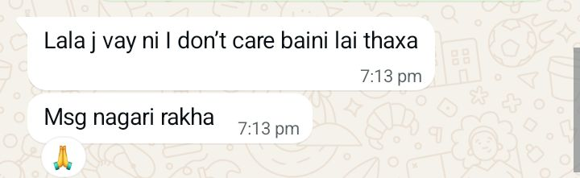
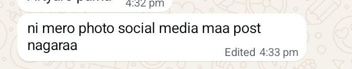

आज लक्ष्मी पूजा। म मानव भ्रमित भगवानलाई मान्दिन । जसरी आफ्नो आमालाई माता पार्वती मानिन्छ । त्यसैगरी आफ्नो प्रिय नारीलाई लक्ष्मी मानिन्छ । र मेरो लागि त्यो लक्ष्मी तपाईँ हुनुहुन्छ। लक्ष्मी पूजाको धेरै धेरै शुभकामना। र तलको मेसेज फुर्सद मिलाएर सबै पढ्नु सबै महत्वपूर्ण छ। happy tihar
विगत र प्रतिज्ञा
Sorry sujana जब म तपाईँसँग contact मा हुन्छु म आफूले आफूलाई सम्हाल्नै सक्दिन। मलाई लाग्छ मेरो हर खुसी तपाईँसँग share गरु. तपाईँको हरेक update पाइराखु । थाहा छैन कस्तो दोसाझ हो। कस्तो दोबाटो हो जुन बाटो छुट्टिएर छाडेर जानु पनि मन छैन। नगैकन पनि हुँदैन। आजबाट म अलग्गै बाटो हिँड्दैछु। तपाईँलाई पिछा गर्ने दोबाटो म छाड्नेछु।
तपाईँसँग बोलेको दुईवर्ष भन्दा धेरै भयो । पहिला तपाईँको विवाह भएको खबर सुन्दा धेरै नराम्रो त लागेको थियो। तापनि बिस्तारै म आफू एक्लै बाँच्न सिकिरहेको थिएँ। झुटै हाँसो हाँस्दै । तर त्यो सानो एउटा भिडियो क्लिपले मेरो जिन्दगी झन् तहस नहस बनाइदियो । यदि त्यो दिन त्यो भिडियो म भाटासम्म नआएको भए म आफ्नो मनलाई बुझाइसकेको हुने थिएँ होला । न म तपाईँसँग कुरा गर्न आउँथे । न म तपाईँलाई यसरी पटकपटक disturb गर्थे । मैले धेरै दुःख दिएँ। यसको लागि माफ गर्नुहोला।
तपाईँ यादमै ठिक हुनुहुन्थ्यो, सुजु। टाढाबाट तपाईँको एउटा धमिलो तस्बिर मात्र देख्दा कम्तीमा यो मनलाई सम्झाउन सजिलो हुन्थ्यो—कि तपाईँ मेरो संसारमा हुनुहुन्न, र मैले आफ्नो बाटो एक्लै तय गर्नुपर्छ। तर तपाईँ आज मेरो सामु हुनुहुन्छ। Contact मा पनि हुनुहुन्छ। तर क्या गर्नु message गर्नै सक्दिन । चोर जस्तरी fake ID बाट profile Stalking गर्नुपर्छ । कहिलेकाहीँ message गर्न मन लाग्यो भने पनि 1000 पटक सोच्नुपर्छ। कतिपय त म message typing गर्छु तर send button दबाउने डर लाग्छ। कतै तपाईँ रिसाउने पो हो कि । म तपाईँलाई धेरै माया गर्छु। म चाहन्न मेरो कारणले तपाईँलाई दुःख होस्। तपाईँलाई म वास्तवमा चाहँदिन तपाईँ मेरो यादमै ठिक हुनुहुन्थ्यो।
सुनसान यात्रार अर्को कुरो जब सुजता (सना) सँग breakup भयो, तब नै मैले एउटा प्रतिज्ञा गरिसकेको छु—अब मेरो जीवनमा कोही पनि आउन दिदिन भनेर। किनभने म जसको हुन्छु, उसको 100% हुन चाहन्छु ।तर जबसम्म तपाईँ मेरो मनमा हुनुहुन्छ, तबसम्म म कसैको 100% हुन सक्दिन । कसैप्रति पनि पूर्ण रुपमा समर्पित हुन सक्दिन। म प्रेम निभाउन होइन, कसैसँग प्रेम गरेपछि उसमै समर्पित हुन चाहन्छु। र जबसम्म तपाईँको यादको 0.000001 प्रतिशत मभित्र हुन्छ, तबसम्म म कसैप्रति समर्पित हुन सक्दिन। जुन दिन तपाईँको याद र प्रेम पूर्णरूपमा मबाट मेटिन्छ, त्यो दिन मात्रै म कसैलाई अपनाउनेछु। र सायद यस्तो हुँदैन होला।
तपाईँले अहिले यो सुन्दा गफ हानेको वा झुटो बोलेको जस्तो लागेको होला। भेटौँ हामी अबको 41 वर्षपछि, तब मेरो उमेर ६० हुन्छ। तब नै मेरो प्रेमको अग्नि परीक्षा दिन्छु। तब पनि म एक्लै हुनेछु, त्यही म। समय बित्ला, उमेर बढ्छ, कपाल फुल्छ, आँखाको नजर कमजोर हुन्छ, तब पनि म ती आँखाले त्यही मेरो विगतको 2077 जेठको 13 गतेको नजर हेरिरहेको हुनेछु। हातहरू काप्दै हुनेछन्, त्यो हातले साथ त्यही व्यक्तिको खोजिरहेको हुनेछ। प्रेम भनेको भनेर होइन, गरेर देखाउनु भन्छन्। के तपाईँ वाचा गर्नुहुन्छ त 41 वर्षपछि भेट्ने?
कल्पना गरौँ तपाईँ र म त्यही स्कुल जाने गन्तव्यमा हिँड्दैछौँ। अब हामी पहिला जस्तो दौडन सक्दैनौँ। हामीलाई त्यो प्रत्येक खुड्किला कुनै पहाड चढेको जस्तो हुनेछ। तब तपाईँ मलाई प्रश्न गर्नुहुनेछ—"कोही म जस्तो भेट्यौ त?" तब मेरो जवाफ हुनेछ:
खोज्न त खोजे तर भेटिना यो सहरमा,
कसैलेचै फूल रोप्छ र यो बाँझो बगरमा?
कसैको अनुहारमा तपाईँको रूप खोज्दा-खोज्दै,
जिन्दगी नै बितिगयो यो अलमल सफरमा
अनि म जुन तर्फबाट हावा आउँछ, त्यो ठाउँमा तपाईँलाई उभ्याएर तपाईँको अगाडि उभिन्छु। ताकि मबाट आउने प्रत्येक हावा तपाईँलाई छोएर आओस्। दुई कदम पछि हटी आफ्ना घुँडाहरूलाई भुइँमा टेक्छु। अनि टाउको निहुराउँदै भन्नेछु:
"I loved you in my past life, I love you in this life, and I will love you in every life to come, Snzu. I love you in every universe."
जबसम्म तपाईँ मेरो यादमा हुनुहुनेछ, म तपाईँको नै प्रतिक्षा गरिरहन्छु। त्यसैले त्यो कथाको नाम "प्रतिज्ञा कि प्रतीक्षा" राखेको थिएँ—मैले लिएको प्रतिज्ञा र तपाईँलाई गर्ने प्रतिक्षा मिलाएर। अनि जसरी कथामा समृद्धिको प्रतिक्षा गर्दै अधिराज मरेको थियो, म पनि त्यसैगरी मर्न चाहन्छु। मलाई मृत्युसँग डर छैन, मात्र अहिले मेरो काँधमा केही अधुरा जिम्मेवारीहरू छन् जसलाई मैले पूरा गर्नुपर्नेछ। त्यति पूरा भएपछि यो दुनियाबाट एकदमै सुनसान ठाउँमा गएर बस्न मन छ—जहाँ कसैको कचकच नहोस्, कसैको suggestion नहोस्, कसैले मेरो बारे नसोधोस्। त्यस्तो जिन्दगी बिताउन मन छ, जहाँ मात्र तपाईँका यादहरू होऊन्।
म तपाईँका फोटोहरू पनि सबै मेरो gallery बाट delete गर्दिन्छु। भिडियो सेक्सनको तल भएको रातो button मा click गरेर एउटा भिडियो हेर्न नछुटाउनु होला। तपाईँकै याद आउँदा हेर्न मसँग एउटा धुलाइएको फोटो छ। जुन फोटो सायद मैले कथामा पनि बयान गरेको छु। त्यही एउटा फोटो म र चुरोट भए मेरो दिन मजाले बित्छ। तपाईँको फोटो र भिडियोहरू पनि अब social media मा राख्दिन।

म खुसी नै छु, तपाईँको खुसी हेरेर। तपाईँ कदापि दुःखी नहुनुहोला। र यदि तपाईँलाई कसैले दुःख दिन्छ भने मलाई भन्नुहोला, म सारा दुनिया जलाइदिन्छु। तपाईँको एक शब्दको आज्ञाले म अरुको त के आफ्नै शिर पनि काटी तपाईँको पाउमा अर्पण गर्दिन्छु।
म भन्न नै सक्दिन कि, म कसरी भनुँ कति माया गर्छु भनेर। भन्छन् जब जुनसुकै कुराको नि धेरै मात्रा हुन्छ त्यसले आफैलाई असर गर्छ। प्रेम पनि त्यस्तै रहेछ। सायद मलाई त प्रेमी पनि होइन भक्त भन्न सुहाउँछ। किनभने म मनबाट भन्दैछु, आफ्नै कसम खाएर म तपाईँलाई मेरो आफ्नो बनाउन चाहन्न। म त बस तपाईँलाई खुसी हेर्न चाहन्छु, र सधैँ तपाईँलाई नै चाहन्छु।
अनि अर्को कुरा आफ्नो बनाउने भनेको के हो? यस समाजको शब्दमा विवाह। अनि विवाह के हो? एउटा सम्झौता जीवनभरि साथ दिन्छु भन्ने बाचा। र सधैँ तपाईँको खुसी र तपाईँको सुख-दुःखमा साथ दिन्छु भन्ने वाचा। मैले त्यो त तपाईँको यादहरूसँग गरिदिएँ। Directly भन्नुपर्दा त्यो सबै बाचा-कसम मैले तपाईँका यादहरूलाई गरिसकेँ। अब तपाईँको याद नै मेरो जीवनसाथी हो।
हटा दो मेरे चेहरे से इस कफ़न को,
मुझे आदत है उसे देखकर मुस्कुराने की,
आग मत लगाओ अभी मेरी अर्थी को,
आखरी हसरत है उसके आने की।
कसले भन्यो सायरीको rhythm ( rhyming) मिल्दा मात्रै सायरी राम्रो हुन्छ भनेर । यसको त्यति राम्रो लाइनहरू मिलेको छैन। तर मैले लेखेको सायरीहरूमध्ये मेरो सबसे favourite सायरी हो यो। यसमा त्यो अटुट प्रतिक्षालाई वर्णन गरिएको छ, जुन मैले तपाईँको लागि लेखेको हुँ। यसमा भनिएको छ: हटाइदेउन मेरो अनुहारबाट कात्रोलाई, मलाई बानी छ उसलाई हेरेर मुस्कुराउने, आगो नलगाउ अहिले मेरो लासलाई, अन्तिम आशा छ उनी आउँछिन् कि भन्ने। बरु हिन्दीमा त अलिअलि लाइनहरू मिल्छ कि, नेपालीमा त मिल्दैन त्यही हो। तपाईँको लागि लेखेको सायरी नमिले नि लाइनहरू बुझ्नू, कस्तो लाग्यो?
विदाई र बाचाअनि सुजु, यो मेरो last Update हो। र मैले तपाईँलाई सायद कसम दिएको थिएँ—App uninstall नगर भनेर। आज त्यो कसमबाट पनि म तपाईँलाई मुक्त गर्दछु। अब तपाईँ यो application uninstall गर्न सक्नुहुन्छ। र म कोसिस गर्नेछु तपाईँबाट टाढा बस्न। र म अधिराज यो कसम खाई भन्छु—भो मलाई थाहा छ मैले आफ्नो वचन पूरा गर्न ज्यान पनि दिन सक्ने व्यक्तिको रूपमा चिनिए पनि यो कुराको वचन पूरा गर्न सक्दिन। तर तपाईँ यति बुझ्नु, दोहोराएर पनि म तपाईँलाई message गरे भने, मेरो माया झुटो रहेछ। सायद यो वचनले मलाई message गर्नबाट आफूले आफूलाई रोक्छ होला। अरुको कसम खाँदिन, तर यदि दोहोर्याएर पनि म तपाईँलाई message गर्छु भने मेरो माया सबै झुटो होस्।
म मानव भ्रमित भगवानसँग प्रार्थना गर्छु। यदि मेरो माया साँचो थियो र भगवान साँच्चिकै हुनुहुन्छ भने मभन्दा धेरै माया गर्ने जीवनसाथी तपाईँलाई परोस्। म अपुरो छु, किनभने मलाई माया गर्न आउँछ तर त्यो माया जताउन र कसैको ध्यान राख्न आउँदैन। तपाईँलाई चाहिँ मभन्दा धेरै माया सँगसँगै तपाईँको ध्यान राख्ने, तपाईँलाई बुझ्दिने र तपाईँको हरेक सुख-दुःखमा साथ दिने जीवनसाथी परोस्। हाम्रो एकतर्फी कहानीको आज अन्त्य रहेछ। अब तपाईँ खुसी हुनुहुन्छ नि? अब तपाईँलाई गल्तीले पनि call आउँदैन (अस्तिको कल साँच्ची नै गल्तीले भएको थियो), message ले disturb गर्ने मेरो नामको notification पनि आउँदैन। थाहा छ यो तपाईँको लागि धेरै खुसीको कुरा हो, तर मलाई भने माछालाई पानी छोड्न जस्तो, तारालाई आकाश छोड्न जस्तो...
यो शब्दहरू लेख्दै गर्दा मुटु च्यातिएर आउँछ, मेरो आँखा सबै रसाएको छ। हात यसरी थरथरी काम्दैछ, जस्तो कि जिन्दगीमा पहिला brown sugar छाड्दा भएको थियो। मेरा ओठहरू पूर्ण रूपमा सुक्का भएका छन्। आँखामा आँसुले पुरै ढाकेर typing पनि राम्रो देखिरहेको छैन। यति धेरै असहाय र दुःखी म यो जिन्दगीमा जम्मा दुईपटक मात्र भएँ—पहिला मेरो भाइ suicide गर्दा अनि आज यो पीडादायी घडीमा। हुन त मैले जीवनमा धेरैपटक Good Bye भन्दै फेरि फर्किएर आएको छु, तर अब चाहिँ बस, पुग्यो। मुटुमाथिको यो पत्थर बोकेर भन्दैछु, माथि पढेको भए मैले तपाईँलाई गर्ने मायाको कसम खाएर भन्छु, अब म कहिल्यै आउँदिन।
take care